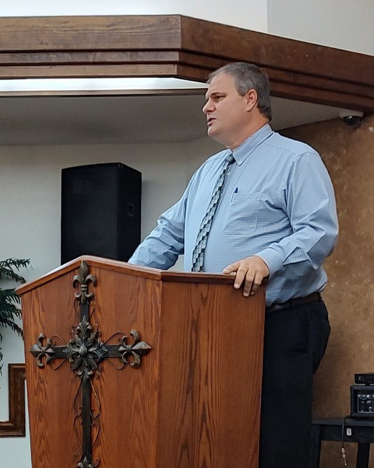
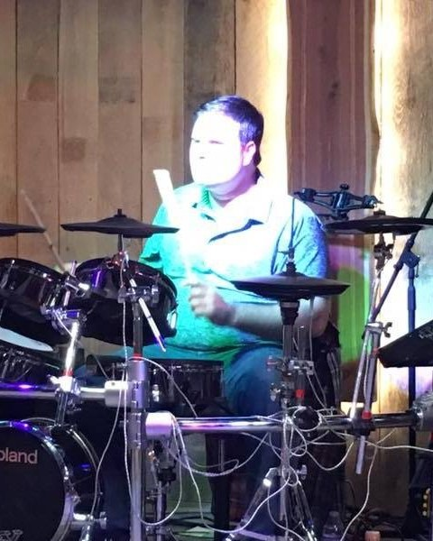
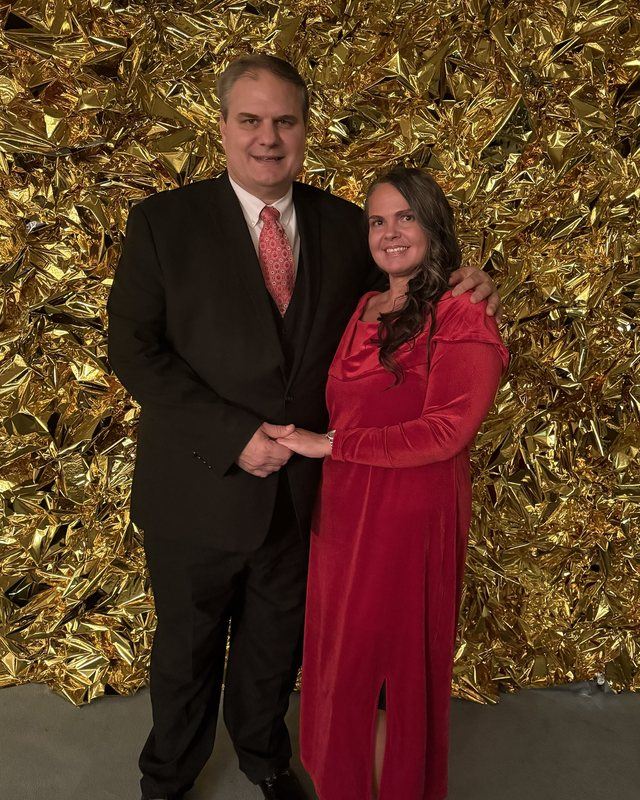
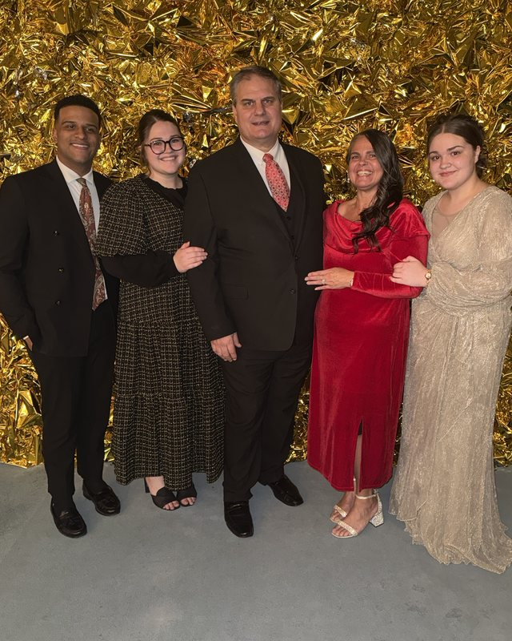
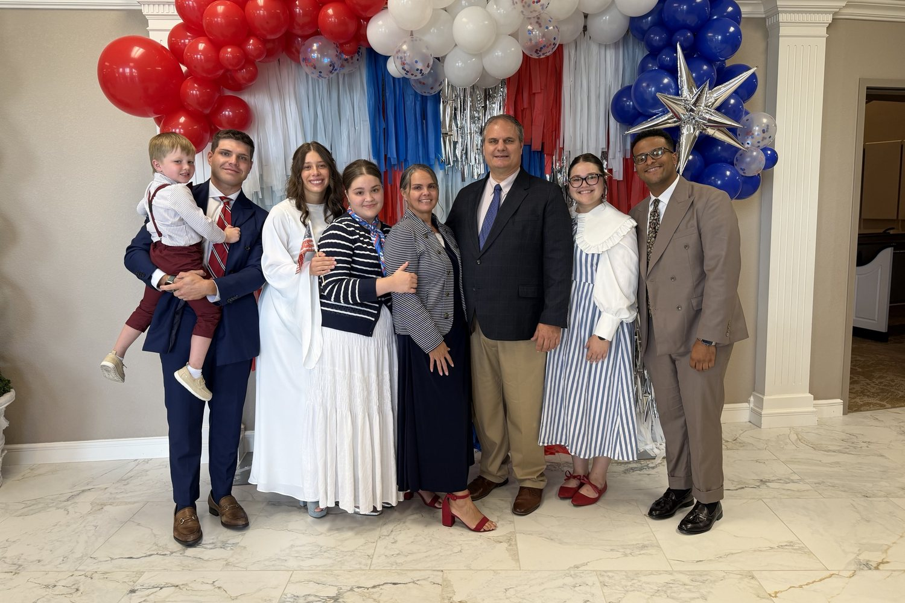

About
Minister. Musician. Writer.
Bro. John Kennon is a local minister who has spent more than thirty years writing the way he preaches: straight from Scripture, honest about the hard places, and certain that God rebuilds what life tears down.
At the Apostolic Church of Fort Worth, he serves in the music ministry as a multi-instrumentalist and singer, teaches adult Sunday school, and is part of the livestream ministry. He also ministers in nursing homes, helps other local churches, and preaches when invited.
His songs pull from gospel, country, and Southern rock, built on strong vocal harmony. His books carry the same message in a quieter voice, through testimony and the everyday moments where faith gets tested.
At home, he is blessed with a beautiful wife, four lovely daughters, three sons, two amazing sons-in-law, two amazing daughters-in-law, and a five-year-old grandson.
Higher Ground Ministries is the home for all of it.
Bro. John Kennon





A little more about us
Coffee, dad jokes, date nights, and a whole lot of sarcasm. Tap any page to see it full size.